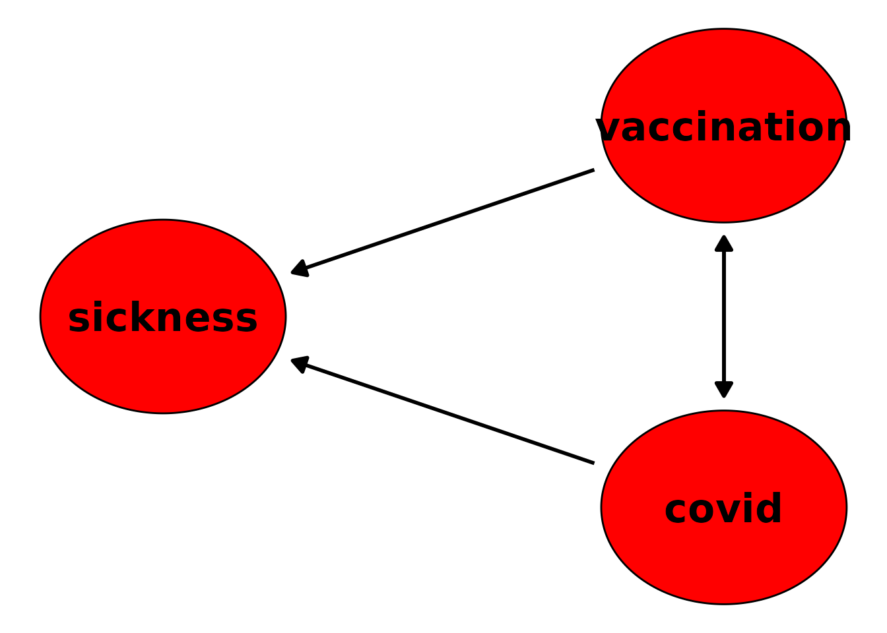

Simulating Covid-19 Vaccine Data using a Discrete-Time Simulation
Robin Denz
Source:vignettes/v_covid_example.Rmd
v_covid_example.RmdIntroduction
This vignette contains an in-depth example on how to use the
sim_discrete_time() function to generate complex
time-to-event data. Unlike the other vignettes, we will not rely on a
overly simple example here. Instead, our aim is to generate somewhat
realistic data about the Covid-19 pandemic. In particular, we are
interested in generating a longitudinal data set containing Covid-19
infections, vaccines and adverse side effects of those vaccines. The aim
of the real study was to create a data set that is reasonably close to
real data, including measurement problems as described below. This data
generation algorithm was then used to identify a suitable data analysis
strategy for the real data. We only describe a slightly simplified
version of the data generation part here to give a detailed example on
how the sim_discrete_time() function may be used
effectively.
Note that the algorithm described here is not completely the same as the one we originally used, because that would require us to include confidential data into this vignette, which is sadly impossible.
We also strongly recommend reading the other two vignettes of this package first.
How to get started
Simulating data that is reasonably close to a complex real system is not a trivial task, even when using this package. Dividing the big task of obtaining a valid data generation model into multiple sub-tasks is a great first step in the right direction. We suggest following the 7 steps below:
1.) Formulate the goal of your research project in a detailed fashion.
If you haven’t done this yet, now is the time. Try to make your goal as explicit as possible. This will help you in deciding which aspects of the system are important to you and which can be safely ignored.
2.) Build a theoretical model of the system you want to simulate.
This entails reading up on relevant literature and writing down any assumptions you may already have about the system. Perhaps (and usually most likely) other researchers have tried to build a simulation model for the same system (or a very similar system). A great way to encode your causal assumptions of the system is time-dependent DAG, as discussed in the other vignettes.
3.) Identify the parts of the system that you are most interested in.
Real systems are incredibly complex. Any simulation will have to make some simplifying assumptions. After building a moderately detailed version of the theoretical model, you will have to decide which aspects are of interest to your research project and which aren’t.
4.) Obtain and analyze real data.
If the simulated data should correspond to real data, it is crucial to base the input of the model on actual empirical data. Using the empirical data, you may be able to derive appropriate distributions for the root nodes and appropriate functional forms of the relationship between the considered variables.
5.) Simulate data for (if needed).
After having specified suitable distributions and relationships,
generate the initial data used in the simulation process. It is
important to check this data thoroughly, as it will be used as a basis
for all subsequent steps of the simulation. The
sim_from_dag() function might be very helpful for this
step.
Our research goal and the theoretical model
Since this vignette is mostly concerned with the practical implementation of the discrete-time simulation approach using this R-package, we will not spend too much time on the first 4 steps of the process mentioned in the previous section. We only briefly present the most important points.
Research goal
Our actual research goal was to identify a suitable data analysis
strategy for the assessment of Covid-19 vaccine side-effects for a
particular real-life data set. To do this we decided to simulate data
that is as close to the real data as possible. Using this data we could
then try out different analysis strategies and see which one performed
adequately. The goal for this vignette is to use parts of this model to
showcase the capabilities of the simDAG package. More
information on the actual simulation can be found in the first related
publication (Denz et al. 2023).
Theoretical model
There is a seemingly endless amount of literature describing models for the Covid-19 pandemic and the associated Covid-19 vaccines. Trying to include all relevant aspects would be an unfeasible task. After deliberating on this literature we decided to include only a few key variables. To make this vignette readable we further limited the variables to only include the most essential:
-
vaccination: The time at which the person received the first vaccine. -
covid: Whether a Covid-19 infection occurred. -
sickness: Whether the person has developed the sickness of interest.
We assume that these three variables vary over time and cause each other.
Implementing the model
Instead of diving in deep from the start and trying to include all relevant variables with all relevant relationships at once, it is often better to build a very simplified version first and to start adding more and more stuff to it as we continue.
Part 1: Adding vaccination, covid and sickness
The most important variables for us are the vaccination,
the covid-19 infection and the sickness. All
of these are variables that have a certain probability of occurrence at
each point in time. Once they occur, they last for some duration
(e.g. someone being sick for two weeks or something similar). After the
event is over, there is usually some duration where the person is
“immune” to receiving the event again. This is a perfect case for using
a time-dependent node of type "time_to_event".
We start out modeling every one of these variables as completely independent of each other using the following DAG:
library(data.table)
library(ggplot2)
library(simDAG)
dag <- empty_dag() +
node_td("vaccination", type="time_to_event", prob_fun=0.001,
event_duration=21, immunity_duration=Inf) +
node_td("covid", type="time_to_event", prob_fun=0.001, event_duration=30,
immunity_duration=80) +
node_td("sickness", type="time_to_event", prob_fun=0.0001,
event_duration=2, immunity_duration=2)In the DAG above, we supplied a constant value to each of the
prob_fun arguments, indicating that regardless of time and
other variables, each event has a constant probability of occurring on
each day. We set the event_duration of
vaccination to 21, because we want to model the time after
vaccination in which the risk for the adverse side-effect (e.g. the
sickness) is higher than usual later on. By setting the
immunity_duration of the vaccination to
Inf, we are currently only allowing the person to get one
vaccination over the entire time. The sickness is allowed
to occur again directly after it was over.
Part 2: Adding adverse effects of vaccination and covid
We can make this data-generation process a little more interesting by
making both the vaccination and covid have an
effect on the probability of developing the sickness. We will do this by
simply raising the probability of occurrence of the
sickness by a constant factor whenever either a
covid or vaccination event is currently
happening. This can be done by formulating an appropriate
prob_fun for the sickness node:
prob_sickness <- function(data, rr_covid, rr_vacc, base_p) {
# multiply base probability by relevant RRs
p <- base_p * rr_vacc^(data$vaccination_event) * rr_covid^(data$covid_event)
return(p)
}This works because any number to an exponent of 1 is itself, while
any number to an exponent of 0 is one. The
vaccination_event and covid_event columns are
always either TRUE (when an event is currently happening)
or FALSE (when no event is currently happening), which are
interpreted as 1 and 0 by R. Let’s update our DAG:
dag <- empty_dag() +
node_td("vaccination", type="time_to_event", prob_fun=0.001,
event_duration=21, immunity_duration=Inf) +
node_td("covid", type="time_to_event", prob_fun=0.001, event_duration=30,
immunity_duration=80) +
node_td("sickness", type="time_to_event", prob_fun=prob_sickness,
parents=c("vaccination_event", "covid_event"),
base_p=0.0001, rr_covid=3.5, rr_vacc=3.24,
event_duration=2, immunity_duration=2)Instead of passing a constant value to the prob_fun
argument, we are now passing it the previously defined function. Because
our function has base_p, rr_covid and
rr_vacc as arguments without defaults, we have to specify
those in the node_td call as well. We keep the original
base_p, and set the relative risks to 3.5 and 3.24
respectively. Additionally, we have to set both the
vaccination_event and the covid_event columns
as parents now, because they are used in the
prob_sickness function.
Part 3: Making the vaccine useful
So far we assumed that the covid infection probability
is unaffected by whether the person received the vaccine or not. We will
now change this by implementing a time-window after receiving the
vaccine in which the person cannot develop a covid
infection. Again, this can be done by defining an appropriate
prob_fun function, this time for the covid
node:
prob_covid <- function(data, base_p, vacc_duration) {
p <- fifelse(data$vaccination_time_since_last < vacc_duration,
0, base_p, na=base_p)
return(p)
}In this function we use the column
vaccination_time_since_last, which is a column that can
optionally be created in time-to-event nodes by setting
time_since_last to TRUE. So let’s again update
our DAG accordingly:
dag <- empty_dag() +
node_td("vaccination", type="time_to_event", prob_fun=0.001,
event_duration=21, immunity_duration=Inf,
time_since_last=TRUE) +
node_td("covid", type="time_to_event", prob_fun=prob_covid,
parents=c("vaccination_time_since_last"),
base_p=0.001, vacc_duration=80, event_duration=30,
immunity_duration=80) +
node_td("sickness", type="time_to_event", prob_fun=prob_sickness,
parents=c("vaccination_event", "covid_event"),
base_p=0.0001, rr_covid=3.5, rr_vacc=3.24,
event_duration=2, immunity_duration=2)Instead of just updating the parents and
prob_fun arguments of the covid node, we now
also had to set the time_since_last argument of the
vaccination node to TRUE as well to get the
required additional column. Our data-generation algorithm is getting
better now. But there is still a lot we can do.
Part 4: Sick people don’t get vaccinated
In reality, very little people who were currently experiencing a
Covid-19 infection went and got the vaccine. In fact, this is absolutely
discouraged by doctors world-wide. To add this circumstance to the
model, we once again simply have to update the probability of receiving
a vaccination, by defining an appropriate prob_fun:
Using this function, the probability of getting vaccinated for any
individual that is currently experiencing a covid infection
is 0. Let’s update our DAG one more time to include these changes:
dag <- empty_dag() +
node_td("vaccination", type="time_to_event",
prob_fun=prob_vaccination,
parents=c("covid_event"), base_p=0.001,
event_duration=21, immunity_duration=Inf,
time_since_last=TRUE) +
node_td("covid", type="time_to_event", prob_fun=prob_covid,
parents=c("vaccination_time_since_last"),
base_p=0.001, vacc_duration=80, event_duration=30,
immunity_duration=80) +
node_td("sickness", type="time_to_event", prob_fun=prob_sickness,
parents=c("vaccination_event", "covid_event"),
base_p=0.0001, rr_covid=3.5, rr_vacc=3.24,
event_duration=2, immunity_duration=2)Again we simply changed the prob_fun argument and added
the correct parents to the appropriate node. Our final
“DAG” looks like this:
plot(dag, mark_td_nodes=FALSE)
#> Loading required namespace: ggforce
Note that in this plot it doesn’t look like a classic DAG anymore,
because it has a bi-directional arrow between covid and
vaccination due to the time-dependent nature of their
relationship.
Generating Data using the final model
Suppose we are now pleased with the complexity of our data-generation
algorithm and want to simulate data from it. We can do this by simply
calling the sim_discrete_time() function on the specified
DAG:
set.seed(42)
sim <- sim_discrete_time(dag, n_sim=1000, max_t=800)
summary(sim)
#> A simDT object with:
#> - 1000 observations
#> - 800 distinct points in time
#> - 3 time-varying variables in total
#> - 3 time_to_event nodes
#> - 0 competing_events nodes
#> Only the last state of the simulation was saved.For exemplary purposes, we kind of arbitrarily used 1000 individuals
and let the simulation run for 800 days. By calling the
plot() method, we get a concise overview over the process
we simulated:
plot(sim, box_text_size=4)A more useful output of the resulting data can be obtained using the
sim2data() function. For example, we could transform the
output to the start-stop format:
sim2data(sim, to="start_stop")
#> .id start stop vaccination covid sickness
#> <int> <int> <num> <lgcl> <lgcl> <lgcl>
#> 1: 1 1 178 FALSE FALSE FALSE
#> 2: 1 179 199 TRUE FALSE FALSE
#> 3: 1 200 800 FALSE FALSE FALSE
#> 4: 2 1 501 FALSE FALSE FALSE
#> 5: 2 502 531 FALSE TRUE FALSE
#> ---
#> 3466: 1000 1 47 FALSE FALSE FALSE
#> 3467: 1000 48 49 FALSE FALSE TRUE
#> 3468: 1000 50 131 FALSE FALSE FALSE
#> 3469: 1000 132 152 TRUE FALSE FALSE
#> 3470: 1000 153 800 FALSE FALSE FALSEAs can be seen, we managed to implement a fairly complex data-generation mechanism using only a few small function definitions and a few lines of code, allowing us to generate a complex dataset with three interdependent time-varying variables with only minimal effort.
Going even further
There is no need to stop here. We could make this simulation model even more complex by implementing any of the following things:
- Adding time-dependent base-probabilities for
vaccination,covidandsickness - Adding different kinds of
vaccinations, perhaps with different effects oncovidand/orsickness - Adding time-fixed variables such as
sexwhich have an effect on any of the other variables - Allowing multiple vaccinations
- Changing the constant raising of the probabilities in the form of a relative risk to a more realistic non-linear time-dependent relative risk
There are of course many more possible extensions, all of which can
be implemented by augmenting the respective prob_fun
arguments and updating the dag accordingly. In fact, in the
real monte-carlo simulation we conducted, that is exactly what we did.
We used empirical data to model time-dependent base-probabilities and
more. How much complexity you really need is completely up to you. We
hope that the simDAG package can help you with whatever you
need.
References
Banks, Jerry, John S. Carson II, Barry L. Nelson, and David M. Nicol (2014). Discrete-Event System Simulation. Vol. 5. Edinburgh Gate: Pearson Education Limited.
Denz, Robin, Katharina Meiszl, Peter Ihle, Doris F. Oberle, Ursula Drechsel-Bäuerle, Katrin Scholz, Ingo Meyer and Nina Timmesfeld (2023). “Impact of Record-Linkage Errors in Covid-19 Vaccine-Safety Analyses using German Health-Care Data: A Simulation Study”. In: arXiv:2310.15016